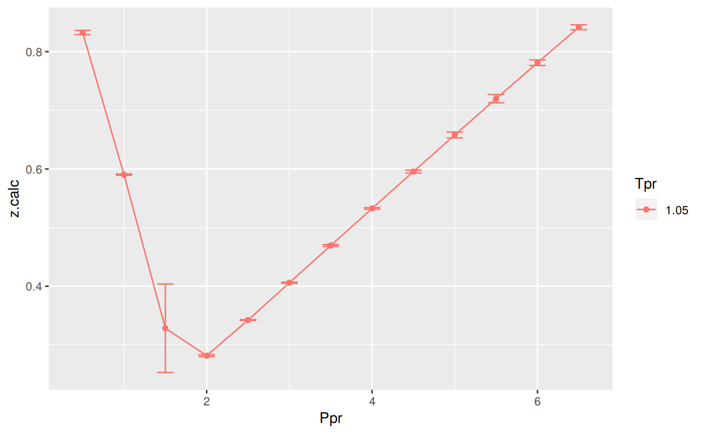
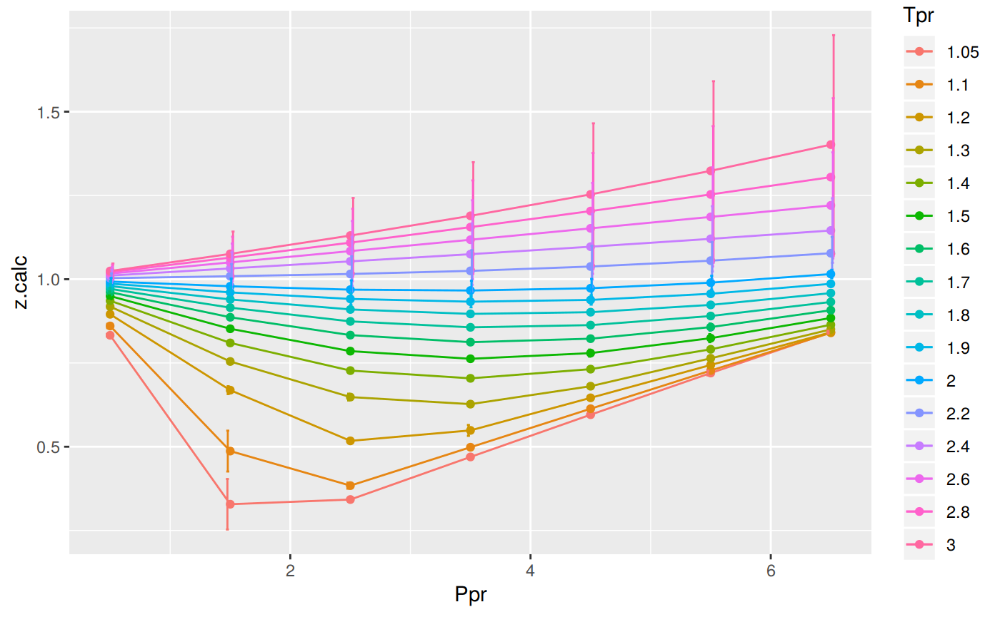

z at selected Ppr and Tpr
Use the the correlation to calculate z and from Standing-Katz chart obtain z a digitized point at the given Tpr and Ppr.
# get a z value
library(zFactor)
ppr <- 1.5
tpr <- 2.0
z.calc <- z.Shell(pres.pr = ppr, temp.pr = tpr)
# get a z value from the SK chart at the same Ppr and Tpr
z.chart <- getStandingKatzMatrix(tpr_vector = tpr,
pprRange = "lp")[1, as.character(ppr)]
# calculate the APE
ape <- abs((z.calc - z.chart) / z.chart) * 100
df <- as.data.frame(list(Ppr = ppr, z.calc =z.calc, z.chart = z.chart, ape=ape))
rownames(df) <- tpr
df
# HY = 0.9580002; # DAK = 0.9551087 Ppr z.calc z.chart ape
2 1.5 0.9788911 0.956 2.394468z at selected Ppr and Tpr=1.1
From the Standing-Katz chart we read z at a digitized point:
library(zFactor)
ppr <- 1.5
tpr <- 1.1
z.calc <- z.Shell(pres.pr = ppr, temp.pr = tpr)
# From the Standing-Katz chart we obtain a digitized point:
z.chart <- getStandingKatzMatrix(tpr_vector = tpr,
pprRange = "lp")[1, as.character(ppr)]
# calculate the APE (Average Percentage Error)
ape <- abs((z.calc - z.chart) / z.chart) * 100
df <- as.data.frame(list(Ppr = ppr, z.calc =z.calc, z.chart = z.chart, ape=ape))
rownames(df) <- tpr
df Ppr z.calc z.chart ape
1.1 1.5 0.4869976 0.426 14.31868z for combinations of Ppr and Tpr
In this example we provide vectors instead of a single point. With the same ppr and tpr vectors that we use for the correlation, we do the same for the Standing-Katz chart. We want to compare both and find the absolute percentage error or APE.
# test DAK with 1st-derivative using the values from paper
ppr <- c(0.5, 1.5, 2.5, 3.5, 4.5, 5.5, 6.5)
tpr <- c(1.05, 1.1, 1.7, 2)
# calculate using the correlation
z.calc <- z.Shell(ppr, tpr)
# With the same ppr and tpr vector, we do the same for the Standing-Katz chart
z.chart <- getStandingKatzMatrix(ppr_vector = ppr, tpr_vector = tpr)
ape <- abs((z.calc - z.chart) / z.chart) * 100
# calculate the APE
cat("z.correlation \n"); print(z.calc)
cat("\n z.chart \n"); print(z.chart)
cat("\n APE \n"); print(ape)z.correlation
0.5 1.5 2.5 3.5 4.5 5.5 6.5
1.05 0.8326386 0.3283475 0.3423544 0.4694593 0.5955314 0.7199048 0.8417472
1.1 0.8603678 0.4869976 0.3838746 0.4984101 0.6133854 0.7273952 0.8399666
1.7 0.9711067 0.9150837 0.8740757 0.8563697 0.8629757 0.8901157 0.9321262
2 0.9929641 0.9788911 0.9688153 0.9662328 0.9730328 0.9896472 1.0154033
z.chart
0.5 1.5 2.5 3.5 4.5 5.5 6.5
1.05 0.829 0.253 0.343 0.471 0.598 0.727 0.846
1.10 0.854 0.426 0.393 0.500 0.615 0.729 0.841
1.70 0.968 0.914 0.876 0.857 0.864 0.897 0.942
2.00 0.982 0.956 0.941 0.937 0.945 0.969 1.003
APE
0.5 1.5 2.5 3.5 4.5 5.5
1.05 0.4389189 29.7816256 0.1882164 0.32711681 0.4128024 0.9759595
1.1 0.7456387 14.3186825 2.3219941 0.31797817 0.2625288 0.2201317
1.7 0.3209368 0.1185687 0.2196652 0.07354565 0.1185486 0.7674749
2 1.1165043 2.3944684 2.9559309 3.11983047 2.9664352 2.1307698
6.5
1.05 0.5026950
1.1 0.1228817
1.7 1.0481711
2 1.2366228isotherms
Applying the function summary over the transpose of the matrix:
sum_t_ape <- summary(t(ape))
sum_t_ape 1.05 1.1 1.7 2
Min. : 0.1882 Min. : 0.1229 Min. :0.07355 Min. :1.117
1st Qu.: 0.3700 1st Qu.: 0.2413 1st Qu.:0.11856 1st Qu.:1.684
Median : 0.4389 Median : 0.3180 Median :0.21967 Median :2.394
Mean : 4.6610 Mean : 2.6157 Mean :0.38099 Mean :2.274
3rd Qu.: 0.7393 3rd Qu.: 1.5338 3rd Qu.:0.54421 3rd Qu.:2.961
Max. :29.7816 Max. :14.3187 Max. :1.04817 Max. :3.120 Tpr
library(zFactor)
# enter vectors for Tpr and Ppr
tpr2 <- c(1.2, 1.3, 1.5, 2.0, 3.0)
ppr2 <- c(0.5, 1.5, 2.5, 3.5, 4.5, 5.5)
# get z values from the SK chart
z.chart <- getStandingKatzMatrix(ppr_vector = ppr2, tpr_vector = tpr2, pprRange = "lp")
# We do the same with the HY correlation:
# calculate z values at lower values of Tpr
z.calc <- z.Shell(pres.pr = ppr2, temp.pr = tpr2)
ape <- abs((z.calc - z.chart) / z.chart) * 100
# calculate the APE
cat("z.correlation \n"); print(z.calc)
cat("\n z.chart \n"); print(z.chart)
cat("\n APE \n"); print(ape)z.correlation
0.5 1.5 2.5 3.5 4.5 5.5
1.2 0.8952802 0.6687882 0.5174626 0.5487317 0.6458856 0.7439699
1.3 0.9183713 0.7543948 0.6481600 0.6270891 0.6805765 0.7639026
1.5 0.9497469 0.8520454 0.7852495 0.7624706 0.7794104 0.8240209
2 0.9929641 0.9788911 0.9688153 0.9662328 0.9730328 0.9896472
3 1.0244435 1.0756217 1.1302991 1.1891676 1.2531487 1.3234649
z.chart
0.5 1.5 2.5 3.5 4.5 5.5
1.20 0.893 0.657 0.519 0.565 0.650 0.741
1.30 0.916 0.756 0.638 0.633 0.684 0.759
1.50 0.948 0.859 0.794 0.770 0.790 0.836
2.00 0.982 0.956 0.941 0.937 0.945 0.969
3.00 1.002 1.009 1.018 1.029 1.041 1.056
APE
0.5 1.5 2.5 3.5 4.5 5.5
1.2 0.2553394 1.7942495 0.2962219 2.8793488 0.6329910 0.4007928
1.3 0.2588778 0.2123283 1.5924800 0.9337925 0.5005094 0.6459244
1.5 0.1842709 0.8096123 1.1020817 0.9778474 1.3404521 1.4329016
2 1.1165043 2.3944684 2.9559309 3.1198305 2.9664352 2.1307698
3 2.2398678 6.6027498 11.0313463 15.5653638 20.3793191 25.3281145isotherms
Applying the function summary over the transpose of the matrix to observe the error of the correlation at each isotherm.
sum_t_ape <- summary(t(ape))
sum_t_ape
# Hall-Yarborough
# 1.2 1.3 1.5 2
# Min. :0.05224 Min. :0.1105 Min. :0.1021 Min. :0.0809
# 1st Qu.:0.09039 1st Qu.:0.2080 1st Qu.:0.1623 1st Qu.:0.1814
# Median :0.28057 Median :0.3181 Median :0.1892 Median :0.1975
# Mean :0.30122 Mean :0.3899 Mean :0.2597 Mean :0.2284
# 3rd Qu.:0.51710 3rd Qu.:0.5355 3rd Qu.:0.3533 3rd Qu.:0.2627
# Max. :0.57098 Max. :0.8131 Max. :0.5162 Max. :0.4338
# 3
# Min. :0.09128
# 1st Qu.:0.17466
# Median :0.35252
# Mean :0.34820
# 3rd Qu.:0.52184
# Max. :0.59923 1.2 1.3 1.5 2
Min. :0.2553 Min. :0.2123 Min. :0.1843 Min. :1.117
1st Qu.:0.3224 1st Qu.:0.3193 1st Qu.:0.8517 1st Qu.:2.197
Median :0.5169 Median :0.5732 Median :1.0400 Median :2.675
Mean :1.0432 Mean :0.6907 Mean :0.9745 Mean :2.447
3rd Qu.:1.5039 3rd Qu.:0.8618 3rd Qu.:1.2809 3rd Qu.:2.964
Max. :2.8793 Max. :1.5925 Max. :1.4329 Max. :3.120
3
Min. : 2.24
1st Qu.: 7.71
Median :13.30
Mean :13.52
3rd Qu.:19.18
Max. :25.33 library(zFactor)
library(tibble)
library(ggplot2)
tpr2 <- c(1.05, 1.1, 1.2, 1.3)
ppr2 <- c(0.5, 1.0, 1.5, 2, 2.5, 3.0, 3.5, 4.0, 4.5, 5.0, 5.5, 6.0, 6.5)
sk_dak_2 <- createTidyFromMatrix(ppr2, tpr2, correlation = "SH")
as.tibble(sk_dak_2)
p <- ggplot(sk_dak_2, aes(x=Ppr, y=z.calc, group=Tpr, color=Tpr)) +
geom_line() +
geom_point() +
geom_errorbar(aes(ymin=z.calc-dif, ymax=z.calc+dif), width=.4,
position=position_dodge(0.05))
print(p)# A tibble: 52 x 5
Tpr Ppr z.chart z.calc dif
<chr> <dbl> <dbl> <dbl> <dbl>
1 1.05 0.5 0.829 0.8326386 -0.0036386379
2 1.1 0.5 0.854 0.8603678 -0.0063677545
3 1.2 0.5 0.893 0.8952802 -0.0022801812
4 1.3 0.5 0.916 0.9183713 -0.0023713210
5 1.05 1.0 0.589 0.5902581 -0.0012581169
6 1.1 1.0 0.669 0.6839190 -0.0149190357
7 1.2 1.0 0.779 0.7797105 -0.0007104794
8 1.3 1.0 0.835 0.8325494 0.0024506149
9 1.05 1.5 0.253 0.3283475 -0.0753475126
10 1.1 1.5 0.426 0.4869976 -0.0609975876
# ... with 42 more rowsTpr
This is the isotherm where we see the greatest error.
library(zFactor)
sk_dak_3 <- sk_dak_2[sk_dak_2$Tpr==1.05,]
sk_dak_3
p <- ggplot(sk_dak_3, aes(x=Ppr, y=z.calc, group=Tpr, color=Tpr)) +
geom_line() +
geom_point() +
geom_errorbar(aes(ymin=z.calc-dif, ymax=z.calc+dif), width=.2,
position=position_dodge(0.05))
print(p)
Tpr Ppr z.chart z.calc dif
1 1.05 0.5 0.829 0.8326386 -0.0036386379
5 1.05 1.0 0.589 0.5902581 -0.0012581169
9 1.05 1.5 0.253 0.3283475 -0.0753475126
13 1.05 2.0 0.280 0.2815444 -0.0015443747
17 1.05 2.5 0.343 0.3423544 0.0006455823
21 1.05 3.0 0.407 0.4060007 0.0009993412
25 1.05 3.5 0.471 0.4694593 0.0015407202
29 1.05 4.0 0.534 0.5326622 0.0013377901
33 1.05 4.5 0.598 0.5955314 0.0024685586
37 1.05 5.0 0.663 0.6579786 0.0050214339
41 1.05 5.5 0.727 0.7199048 0.0070952254
45 1.05 6.0 0.786 0.7812009 0.0047991437
49 1.05 6.5 0.846 0.8417472 0.0042528000SH correlation for all the Tpr curvesIn this last example, we compare the values of z at all the isotherms. We use the function getCurvesDigitized to obtain all the isotherms or Tpr curves in the Standing-Katz chart that have been digitized. The next function createTidyFromMatrix calculates z using the correlation and prepares a tidy dataset ready to plot.
library(ggplot2)
library(tibble)
# get all `lp` Tpr curves
tpr_all <- getStandingKatzTpr(pprRange = "lp")
ppr <- c(0.5, 1.5, 2.5, 3.5, 4.5, 5.5, 6.5)
sk_corr_all <- createTidyFromMatrix(ppr, tpr_all, correlation = "SH")
as.tibble(sk_corr_all)
p <- ggplot(sk_corr_all, aes(x=Ppr, y=z.calc, group=Tpr, color=Tpr)) +
geom_line() +
geom_point() +
geom_errorbar(aes(ymin=z.calc-dif, ymax=z.calc+dif), width=.4,
position=position_dodge(0.05))
print(p)
# A tibble: 112 x 5
Tpr Ppr z.chart z.calc dif
<chr> <dbl> <dbl> <dbl> <dbl>
1 1.05 0.5 0.829 0.8326386 -0.0036386379
2 1.1 0.5 0.854 0.8603678 -0.0063677545
3 1.2 0.5 0.893 0.8952802 -0.0022801812
4 1.3 0.5 0.916 0.9183713 -0.0023713210
5 1.4 0.5 0.936 0.9357838 0.0002162375
6 1.5 0.5 0.948 0.9497469 -0.0017468881
7 1.6 0.5 0.959 0.9613216 -0.0023215848
8 1.7 0.5 0.968 0.9711067 -0.0031066681
9 1.8 0.5 0.974 0.9794808 -0.0054807773
10 1.9 0.5 0.978 0.9867035 -0.0087035343
# ... with 102 more rows# MSE: Mean Squared Error
# RMSE: Root Mean Squared Error
# RSS: residual sum of square
# ARE: Average Relative Error, %
# AARE: Average Absolute Relative Error, %
library(dplyr)
grouped <- group_by(sk_corr_all, Tpr, Ppr)
smry_tpr_ppr <- summarise(grouped,
RMSE= sqrt(mean((z.chart-z.calc)^2)),
MPE = sum((z.calc - z.chart) / z.chart) * 100 / n(),
MAPE = sum(abs((z.calc - z.chart) / z.chart)) * 100 / n(),
MSE = sum((z.calc - z.chart)^2) / n(),
RSS = sum((z.calc - z.chart)^2),
MAE = sum(abs(z.calc - z.chart)) / n(),
RMLSE = sqrt(1/n()*sum((log(z.calc +1)-log(z.chart +1))^2))
)
ggplot(smry_tpr_ppr, aes(Ppr, Tpr)) +
geom_tile(data=smry_tpr_ppr, aes(fill=MAPE), color="white") +
scale_fill_gradient2(low="blue", high="red", mid="yellow", na.value = "pink",
midpoint=12.5, limit=c(0, 25), name="MAPE") +
theme(axis.text.x = element_text(angle=45, vjust=1, size=11, hjust=1)) +
coord_equal() +
ggtitle("Shell", subtitle = "SH")Tpr and Ppr values that show more errorThe MAPE (mean average percentage error) gradient bar indicates that the more red the square is, the more error there is.
library(dplyr)
sk_corr_all %>%
filter(Tpr %in% c("1.05", "1.1", "2.4", "2.6", "2.8", "3")) %>%
ggplot(aes(x = z.chart, y=z.calc, group = Tpr, color = Tpr)) +
geom_point(size = 3) +
geom_line(aes(x = z.chart, y = z.chart), color = "black") +
facet_grid(. ~ Tpr, scales = "free") +
geom_errorbar(aes(ymin=z.calc-abs(dif), ymax=z.calc+abs(dif)),
position=position_dodge(0.5))They don’t look good. Too much error.
Finally, the dataframe with the calculated errors between the z from the correlation and the z read from the chart:
as.tibble(smry_tpr_ppr)# A tibble: 112 x 9
# Groups: Tpr [?]
Tpr Ppr RMSE MPE MAPE MSE
<chr> <dbl> <dbl> <dbl> <dbl> <dbl>
1 1.05 0.5 0.0036386379 0.4389189 0.4389189 1.323969e-05
2 1.05 1.5 0.0753475126 29.7816256 29.7816256 5.677248e-03
3 1.05 2.5 0.0006455823 -0.1882164 0.1882164 4.167765e-07
4 1.05 3.5 0.0015407202 -0.3271168 0.3271168 2.373819e-06
5 1.05 4.5 0.0024685586 -0.4128024 0.4128024 6.093781e-06
6 1.05 5.5 0.0070952254 -0.9759595 0.9759595 5.034222e-05
7 1.05 6.5 0.0042528000 -0.5026950 0.5026950 1.808631e-05
8 1.1 0.5 0.0063677545 0.7456387 0.7456387 4.054830e-05
9 1.1 1.5 0.0609975876 14.3186825 14.3186825 3.720706e-03
10 1.1 2.5 0.0091254368 -2.3219941 2.3219941 8.327360e-05
# ... with 102 more rows, and 3 more variables: RSS <dbl>, MAE <dbl>,
# RMLSE <dbl>Almeida, J. Cézar de, J. A. Velásquez, and R. Barbieri. 2014. “A Methodology for Calculating the Natural Gas Compressibility Factor for a Distribution Network.” Petroleum Science and Technology 32 (21): 2616–24. doi:10.1080/10916466.2012.755194.
Azizi N., Isazadeh M.A., Behbahani R. 2010. “An Efficient Correlation for Calculating Compressibility Factor of Natural Gases.” Journal of Natural Gas Chemistry Volume 19 (Issue 6, 2010,): 642–45. doi:10.1016/S1003-9953(09)60081-5.
Kumar, Neeraj. 2004. “Compressibility Factors for Natural and Sour Reservoir Gases by Correlations and Cubic Equations of State.” Master’s thesis, Texas Tech University. https://ttu-ir.tdl.org/ttu-ir/handle/2346/1370.